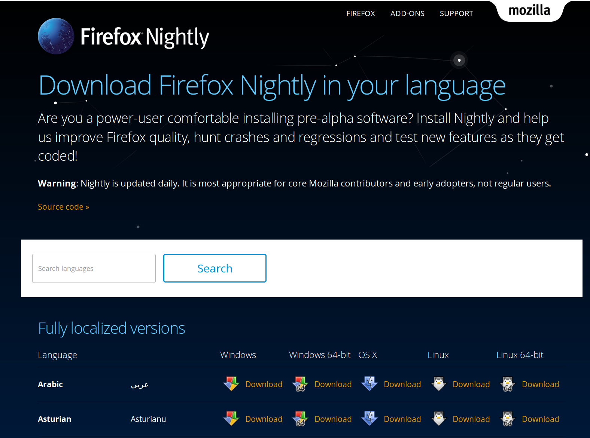
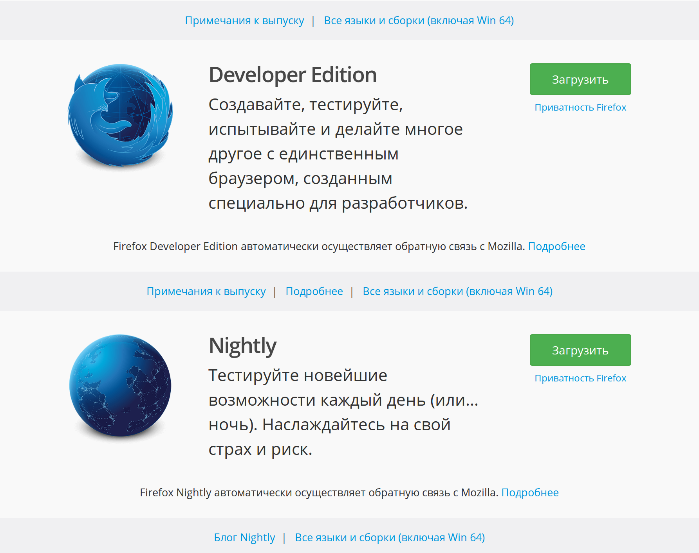
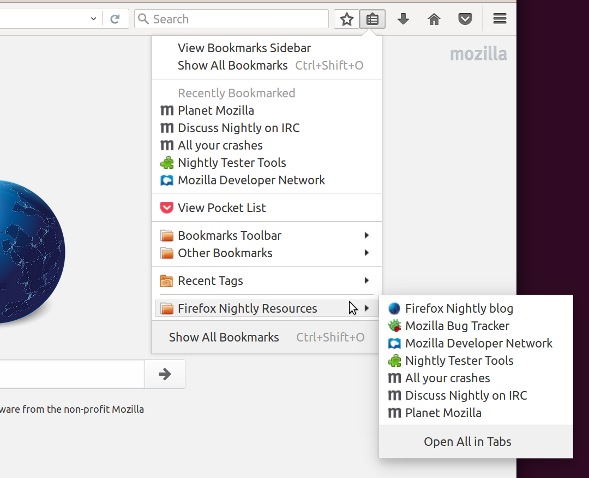
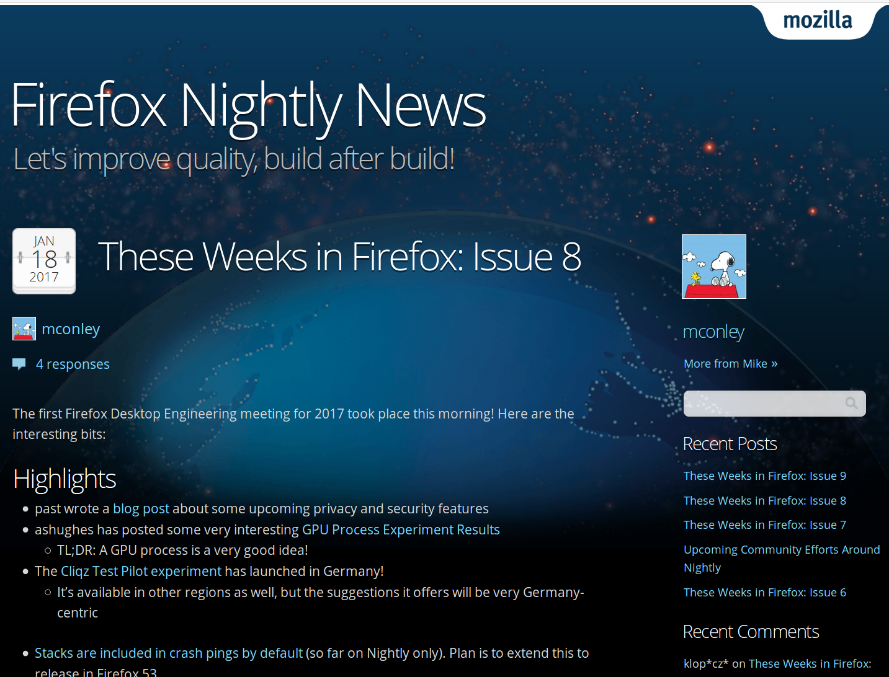
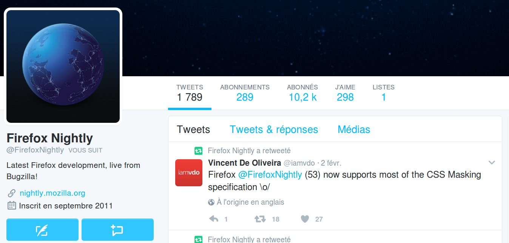
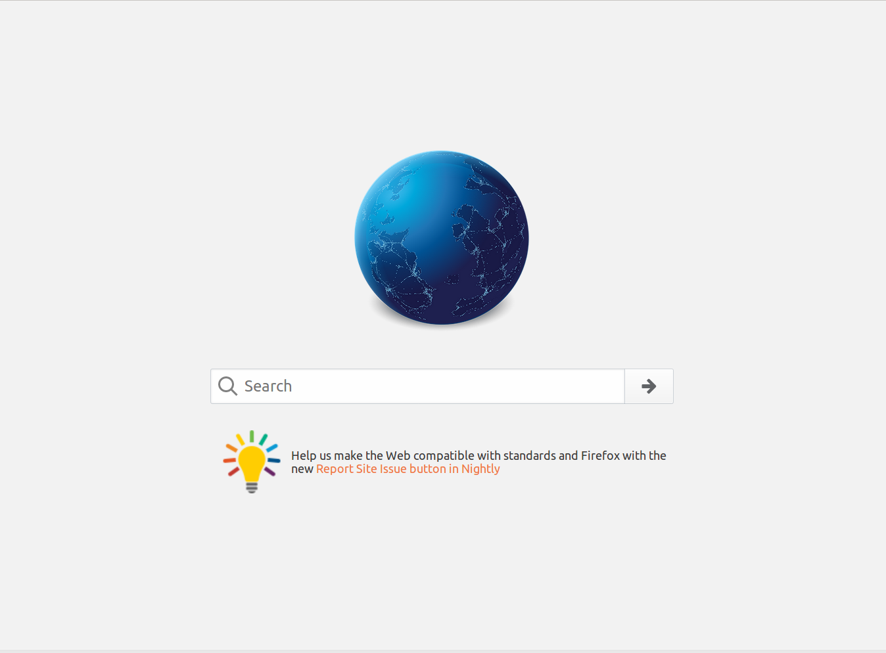
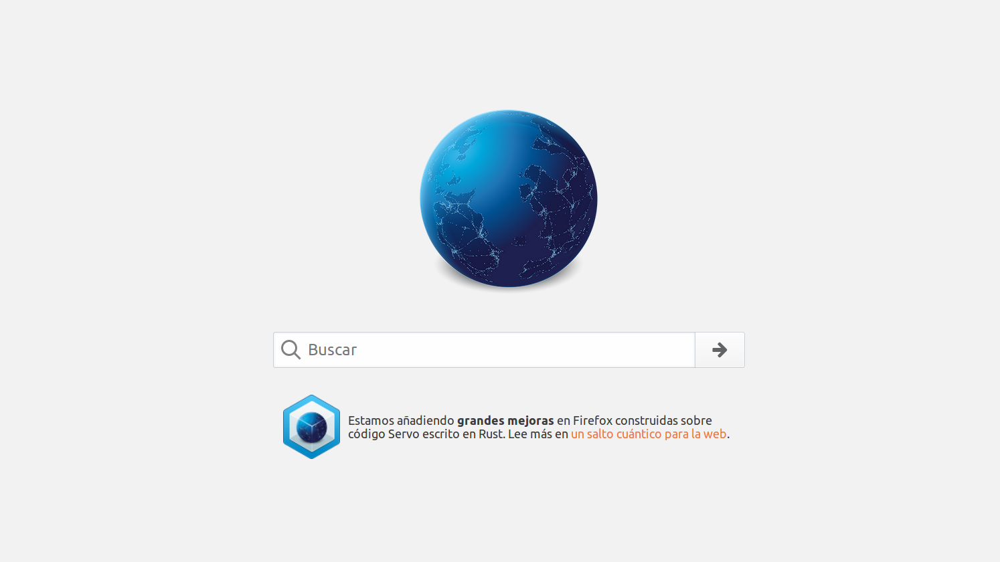
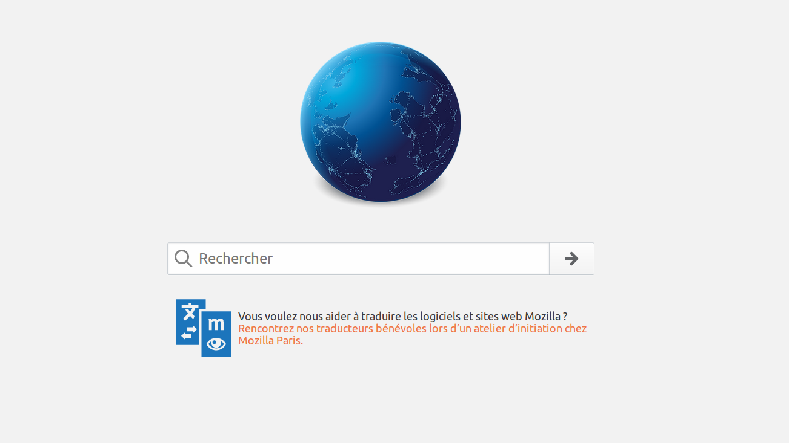
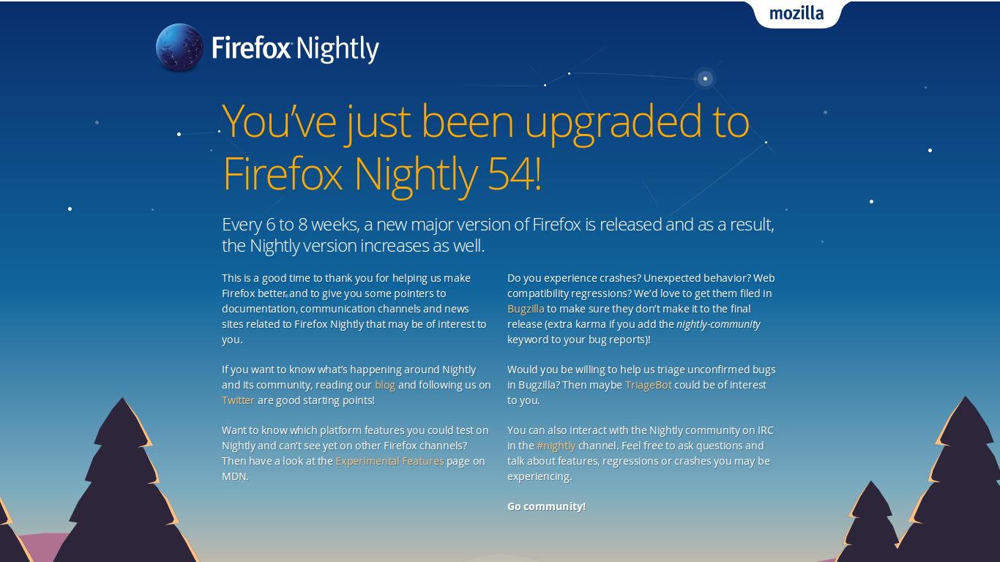

nightly
<reloaded/>Firefox Nightly in a nutshell?
- Compiled every day with mozilla-central code
- 6 first weeks of our train model
- Crash reporting and telemetry on by default
- Many experimental features are activated
- No Firefox branding
- Awesomeness++, Stability--
Nightly in our train model
| 54 | 53 | 52 | 51 | 50 | 49 |
|---|---|---|---|---|---|
| Nightly | Aurora | Beta | Release | ||
| Nightly | Aurora | Beta | Release | ||
| Nightly | Aurora | Beta | Release |
6 weeks cycles: Nightly + Aurora + Beta = 18 weeks to release
Why we need Firefox Nightly users?
- We need their crash reports to prioritize stability work
- Telemetry can also give us valuable information
- Tech-savvy crowd, report actionable bugs
- If we want to ship faster we must detect regressions earlier
- We will need a lot of testing with Quantum
- Our core technical community, let's get them involved!
Who are our Nightly users?
February 2017
 89%
89% 6%
6% 5%
5%
Location and language (Feb. 2017)
| Country | % of Nightly users |
|---|---|
| United States | 16.6 |
| Germany | 9.5 |
| Russia | 5.8 |
| India | 5.4 |
| Indonesia | 5.0 |
| France | 3.9 |
| United Kingdom | 3.4 |
| Canada | 2.9 |
| Poland | 2.4 |
| Ukraine | 2.4 |
| Japan | 2.0 |
| Australia | 1.8 |
| Brazil | 1.8 |
| Netherlands | 1.6 |
| Italy | 1.6 |
| Locale code | % of Nightly users |
|---|---|
| en-US | 86.5 |
| ru | 5.2 |
| de | 1.8 |
| fr | 1.5 |
| ja | 0.8 |
| pl | 0.6 |
| en-GB | 0.6 |
| es-ES | 0.4 |
| zh-CN | 0.3 |
| pt-BR | 0.3 |
| it | 0.2 |
| ko | 0.2 |
| uk | 0.2 |
| zh-TW | 0.2 |
| ar | 0.1 |
Nightly Reboot Status
* Started in May 2016
* Under Release Management
* Tons of things to fix/improve
DONE SO FAR
Many things were fixed or improved to make Firefox Nightly more discoverable and focused on participation
Download pages on www.mozilla.org
Download pages on www.mozilla.org
Default bookmarks focused on getting involved
External communication:
blog

External communication:
Twitter

Internal communication:
about:home

Internal communication:
about:home Spanish

Internal communication:
about:home French

Internal communication:
What's New page page is back!

Other
* _nightly_ IRC channel + bridged Telegram group
* Events:
* Paris Open Source Summit (France)
* Capitole du Libre (France)
* MozillaTN Meetup 2017 (India)
* Started working with Spanish and Italian Mozilla communities
* Nightly stickers at the booth ;)
What could you do to help?
Promotion
* Promote Nightly at events, _ideally non-Mozilla events_
* Twitter, blog posts, forums: talk about our cool features, collect feedback
* Translate interesting technical articles and promote them
* You have a patch in Nightly? _Our blog is open for you!_
QA
* Use Nightly as your main browser
* Test all the new features, report bugs!
* Help triage bugs, look for regression ranges
* Help people not confortable with English with bug reporting!
If Nightly were good enough, could we do that?
| 57 | 56 | 55 | 54 | 53 |
|---|---|---|---|---|
| Nightly | Beta | Release | ||
| Nightly | Beta | Release | ||
| Nightly | Beta | Release |
8 weeks cycles: Nightly + Beta = 16 weeks to release
Contact information
- pascal@mozilla.com
 pascalchevrel
pascalchevrel pascalc
pascalc